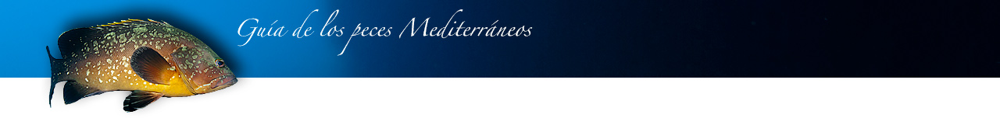
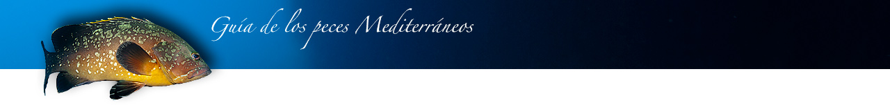

Como distinguirlo Lo primero que nos llamará la atención será su tamaño y aspecto robusto. Algunos ejemplares rondan los 1,5 metros. Su color es marrón chocolate en el dorso, cambiando hacia amarillento en el vientre. La cara y el lomo se hallan salpicados de manchas amarillentas de forma y distribución irregular. Los labios son de un tamaño considerable, y el inferior más largo que el superior. La aleta caudal es potente y redondeada, mientras que la aleta dorsal posee unos radios espinosos que le confieren una sólida apariencia. Dónde encontrarlo Aparece en los fondos rocosos de grandes bloques, donde abundan las cavidades y recovecos que les sirven de guarida. Prefiere las aguas poco profundas, aunque la fuerte presión a la que se hayan sometidos les ha obligado a retirarse en busca de la protección de las profundidades. Se trata de un pez fuertemente territorial. Son más abundantes en el verano, pues coincide con su periodo reproductor y es el momento en el que se reúnen para procrear. Curiosidades • Su presa favorita son los pulpos y calamares, además de algunos peces y crustáceos. • Las hembras, entre los 10 y 12 años de edad, cambian de sexo y se transforman en machos. • Los meros pueden modificar su coloración básica según su comportamiento reproductor o estado de ánimo. Es posible identificar a un individuo por el patrón de manchas que muestran en la cara, ya que este nunca se repite. • Solo la cabeza del mero contiene tantos huesos como todo el cuerpo humano. • Pueden llegar a vivir hasta 50 años y pesar 50 Kg. • Su carne es excelente, circunstancia que ha favorecido su persecución, especialmente por parte de los pescadores submarinos. Por eso es cada vez más difícil de ver. Se ha convertido en un animal bastante desconfiado. Sin embargo, en áreas protegidas se aproximará a nosotros sin ningún temor. |
|
Publicidad de Nico
Ponerla a 1280px de ancho